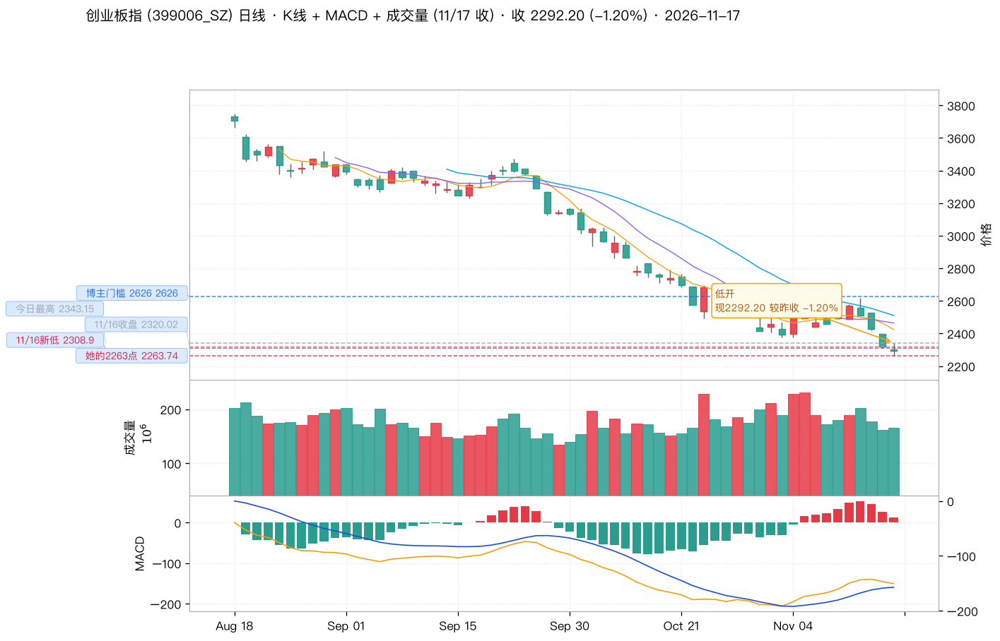

📈 wu2198 - 2026-11-17（周二 2263点触达，等吃肉）
🟢 连续两天第一次出现明确方向 —— 但方向是「位置」不是「板块」。 10:07「C 不一定是机会，但 C5 绝对是机会」→ 10:31「没有什么思考的余地，要么继续被干，要么干」→ 14:56「本周 2263 点可以了，接下来等吃肉了」—— 她给的 2263 点当天就被创业板指最低 2263.74 触达。 她 13:38 也说清「抵抗力量有，但未出现可扭转局面的力量」—— 位置到位、方向未定：只做银行 + 白酒 + 军工，科技只留高成长龙头。
一、博主说了什么（8 条）
| 时间 | 信号 | 原文 | 判读 / 日线实测 |
|---|---|---|---|
| 06:07 | ⚪ 外盘 | 昨晚美股下跌：道指跌739点、纳指跌626点、标普跌145点 | 三个数字分毫不差：11/16 实测 −739.38 / −626.51 / −145.08（纳指 −2.49% 最重）。 |
| 09:39 | 🟢 板块点名 | GPU，半导体等目前局部走红！ | 「局部」成立、「等」不成立：科创50 -0.08% 是五大指数唯一上涨， 寒武纪 +0.76%、有研新材涨停；但存储池均值 -2.32%、澜起 -6.57% → 只有龙头在红。 |
| 10:07 | 🟢🟢 位置定性 | 以前给大家分析过 C 不一定是机会，但是 C5 绝对是机会。 | 本期最重要的一条：把「等」具体化成 C5。11:14 再次点名「有技术的 C3 开始布局，稳健的 C5 完成之后干」——比 11/13 的「分批承接」更明确。 |
| 10:31 | 🟢🟢 立场表态 | 现在的位置，没有什么思考的余地。要么继续被干，要么干！ | 从观望切到主动。当日沪指最低 3565.59、创业板最低 2263.74，双指数创 60 日新低 → 她在最低位喊「干」。 |
| 10:47 | 🟢 方向 | 科技类股杀估值去杠杆，清洗干净之后，高成长+行业向好的科技股会走出局部行情。 | 把 11/16 科技崩盘定性为杀估值而非逻辑破坏。涨停池有研新材、卡莱特等兑现，但算力池 -0.36%、存储池 -2.32% → 清洗尚未结束。 |
| 13:38 | 🟡 收盘前定性 | 市场上抵抗力量是有的，但还未见出现可扭转局面的力量。 | 当日最准的一句：涨 1326 / 跌 4119，尾盘跌停从盘中 40 家增到 103 家，创业板收 2292.20（仍低于 11/16 新低 2308.90）→ 有抵抗、无反转。 |
| 14:54 | 🟡 盘面反应 | 下砸拉起，好事！ | 尾盘从低位回拉，创业板自 2263.74 拉回 28.46 点，但收盘仍跌 -1.20%。 |
| 14:56 | 🟢🟢 关键位 | 本周 2263 点可以了，接下来等吃肉了！ | 本期最硬的核验：创业板指最低 2263.74，与 2263 点分毫不差；这是她第一次在 C 杀期间给出可执行点位。「等吃肉」= 位置到了，买点在 C5 之后。 |
二、大盘关键点位
上证指数 · 3584.58（-0.50%）

开 3585.67 / 高 3604.98 / 低 3565.59 / 收 3584.58。 最低 3565.59 是新的 60 日低点（前低 3574.27 被跌破）； 3706 差 121.42 点（3.28%），MA20 3654.66 失守，量能 5 日均 96%。
创业板指 · 2292.20（-1.20%）

开 2299.97 / 高 2343.15 / 低 2263.74 / 收 2292.20。 最低 2263.74 = 她的 2263 点，也是新的 60 日低点；收盘较日低拉回 28.46 点， 但仍低于 11/16 新低 2308.90；2626 差 333.80 点（12.71%），MA20 2510.40 远在头顶。
三、最值得关注的 3 个板块
| 板块 | 11/17 收盘实测 | 博主口径 / 打法 |
|---|---|---|
| ① 白酒 / 大消费 首选 · 唯一正收益 |
池 5 只 4 涨 1 跌，均值 +0.43%，额 96 亿 泸州老窖 +1.67%、山西汾酒 +0.89% / 古井贡酒 -1.05% |
全市场唯一收正的池。茅台收 1457.70、站上 MA20 1402.99，距 60 日高 1480.60 仅 22.90 点。只做茅台、不做扩散（避险≠进攻）。 |
| ② 银行 / 红利 次选 · 尾盘翻红 |
池 10 只 8 涨 1 跌 1 平，均值 +0.22%，额 200 亿 浦发银行 +0.74%、中国银行 +0.68% / 平安银行 -0.41% |
他 11/16 14:39 点名的方向，今天没有被证伪（盘中一度 9 跌 1 涨，收盘翻红 0.22%）。招行 43.45 站上 MA20 42.74，只作底仓垫。 |
| ③ 军工 观察 · 池内一枝独秀 |
池 12 只均值 -0.07%（4 涨 7 跌），额 67 亿 中航光电 +3.94%、中航机载 +1.43% / 国光电气 -3.77% |
他 11/16 13:55「军工五六只冲板」收盘没兑现、今天补上：中航光电 +3.94% 放量 140%。只做池内领涨，不做板块。 |
四、3 支个股
| 代码 名称 | 收盘 | 涨跌 | 成交额 | 关键位 | 实测印证 / 动作 |
|---|---|---|---|---|---|
| 002179 中航光电 | 34.55 | +3.94% | 8.8 亿 | MA20 33.41 · 60 日高 36.25 | 全场最强个股：放量 140%、收在当日最高 34.63 附近，站上 MA5/MA10/MA20。回踩 MA20 不破可分，冲高不追。 |
| 600519 贵州茅台 | 1457.70 | +0.26% | 51.0 亿 | MA20 1402.99 · 60 日高 1480.60 | 唯一正收益池的龙头，逆势收红、站上 MA20 1402.99，量能 93% 未爆量。低吸不追高，破 MA20 放弃。 |
| 688256 寒武纪 | 904.80 | +0.76% | 122.5 亿 | MA20 891.64 · 60 日高 1170.00 | 正对她 10:47「高成长+行业向好的科技股走出局部行情」—— 存储池 1 涨 7 跌里唯一的红，收盘站上 MA20 891.64。回踩 MA20 可分批，不追高。 |
中航光电（002179）· 34.55（+3.94%）

高 34.63 / 低 32.95 / 收 34.55，放量阳线站上 MA20 33.41； 60 日高 36.25 是第一道压制，60 日低 30.97 在下方。
贵州茅台（600519）· 1457.70（+0.26%）

高 1461.60 / 低 1437.71 / 收 1457.70，逆势小阳；MA20 1402.99 在下方支撑， 60 日高 1480.60 距今 22.90 点。
寒武纪（688256）· 904.80（+0.76%）

高 950.00 / 低 886.00 / 收 904.80，收盘站上 MA20 891.64； 60 日高 1170.00 在左上（距今 29.3%）。
五、11/18（周三）盯什么（5 条）
- 创业板 2263.74（她的 2263 点）不破 —— 今天已触达，破了则下一目标 2200 整数关。
- 沪指 60 日新低 3565.59 不破 —— 破了说明她的「位置」判断还要往下修。
- 跌停家数从 103 家回落 —— 尾盘比盘中多 60 家，情绪没修复完之前不加仓。
- 成交额回到 1.6 万亿以上 —— 今天 14,577 亿、缩量 268 亿；缩量止跌不算止跌。
- 她给不给 C5 的具体定义（时间/空间/标的）—— 10:07 只说「C5 绝对是机会」，没给买点就还是不能满仓。
六、偏差记录
| 项 | 博主口径 | 实测 / 处理 |
|---|---|---|
| 14:56「本周 2263 点」 分毫不差 | 本周 2263 点可以了，接下来等吃肉了 | 创业板指 11/17 最低 2263.74，与 2263 点分毫不差；收盘 2292.20 较日低拉回 28.46 点。 本期最硬的核验——她第一次在 C 杀期间给出可执行点位。 |
| 06:07 外盘 分毫不差 | 道指跌739点、纳指跌626点、标普跌145点 | 11/16 实测 −739.38 / −626.51 / −145.08，分毫不差（外盘播报继续全中）。 |
| 13:38 收盘前定性 成立 | 抵抗力量是有的，但还未见出现可扭转局面的力量 | 涨 1326 / 跌 4119，尾盘跌停从盘中 40 家增到 103 家， 创业板收盘仍低于 11/16 新低 → 有抵抗、无反转，成立。 |
| 13:27 / 13:35 板块点名 零散未成主线 | 光刻胶板块今天表现出色点／超节点+交换机，板块出现拉起 | 涨停池确有电子化学 3、IT服务 3、计算机设备 2、光学光电 2，但分散在 12+ 行业、最高仅 3 板 → 兑现为零散涨停，不构成主线（与她 13:02「还没有明朗的热点效应」自洽）。 |
| 双门槛 3706 / 2626 继续搁置 | 11/17 全天未提门槛，只给 2263 点与 C5 口径 | 沪指距 3706 差 121.42 点、创业板距 2626 差 333.80 点。 门槛没松、新点位出现——她的框架从「等收复 3706/2626」换成「等 C5 完成」，点位体系换了，纪律没换。 |
免责声明：本报告为公开微博内容整理与技术面统计，不构成投资建议； 「3 板块 + 3 个股」是博主观点 + 实测强度的归纳，不代表推荐。股市有风险，投资需谨慎。
报告生成：2026-11-17 收盘版 · 数据源 weibo skill + 东方财富（+ Tushare Pro 日线底座）·
脚本 collect_close_20261117.py / build_close_20261117.py /
make_wu2198_charts_20261117.py / gen_wu2198_report_20261117.py。